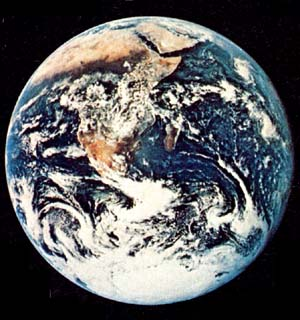

Science traditionally has held to the attitude that natural organisms are a product of the environment: those fit to survive, survive . . . and those unfit, parish. "Ecology" is usually referred to as the relationship which exists between natural organisms and their environment, with the influence of the environment predominating.
Recently, however, a British scientist-James Lovelock-has made a rather radical proposal which he calls the "Gaea hypothesis" (after the Greek. goddess of the earth). His suggestion is that the theory of evolution as we understand it is a complete reversal of what actually occurs in that we attribute the weight of influence to environment rather than to the living organism.
The germ of Lovelock's theory comes from observations made of outer space photographs of the planet, in which the earth's mantle of atmosphere-drawn about her like a cloak-suggested to him a protective modification of the environment (such as a snail might find in its shell).
"If all the life organisms on earth are subtly interrelated," he reasoned, "is it not possible that it is, in fact, one organism ... one Life? And is it not possible that Life has in large measure shaped the environment of the earth to Its requirements, rather than being primarily a product of environmental circumstance?"
Life on earth, Lovelock feels, clearly exhibits the characteristic of being a single organism with man in the midst. And man, because of his nature, should be capable of functioning something like a central nervous system to the whole, thereby enhancing its development. Man, however, has failed in this responsibility and, instead, proceeds willy-nilly to alter the environment without regard for the greater organism he centers. He alters the environment on impulse ... an impulse which disregards the Life of the Whole.
Lovelock suggests that Life began to shape Its expression on earth many millions of years ago. It did this by creating the atmosphere we now know from random gases and for the purpose of developing a suitably protective mantle that would allow the more delicate expressions of the larger organism to emerge. Life, then-human beings notwithstanding-is, significantly, intelligent and has direction.
Interestingly enough, the scientific community is finding that many supposed anomalies are explained by Lovelock's hypothesis. According to the laws of chemistry, for instance, most of the oxygen and nitrogen in the atmosphere should have ended up in the seas as nitrate ions long ago. Biological factors, however, do not permit this. Rather, they modify the chemical process to the advantage of the living organism.
They use the process to continuously refresh the atmosphere.
Lovelock-whose work on industrial pollution is supported by numerous large corpo rations-indicates that the health of the one earth organism is deteriorating rapidly. He cites, for example, that an immense danger is emerging from the practices of modern agriculture. A greater danger to Life, in fact, is developing in this area of man's activities than in all the other pollution-producing activities of industrial technology put together.
Man's efforts to feed his proliferating population have resulted in "modern" farming techniques and the wholesale use of inorganic methods. Techniques and methods that disrupt the balance of the whole organism and which have begun to destroy delicately balanced ecological systems within the organism. And Gaea needs these systems (such as the previously mentioned atmosphere which, when properly maintained, supplies the oxygen we need, filters out the sun's dangerous cosmic rays and keeps them from harming us, etc.).
Constantly urged on by his nature to ignorant, self-centered manipulation of the natural environment, man is rather like a radically disruptive central nervous system to the whole ... inaccurate in his perceptions and destructive in his compulsive modifications. Not only has man reneged on his true responsibilities as an integral part of the living organism ... but he has also injected into the whole patterns of behavior which disrupt and destroy the natural unconscious functions of the organism. Man has become rather a malignant cancer in the body of Life.
Man prides himself on his intelligence, perception, vision, and the gift of reason. He sets himself proudly aside as the one creature with the capacity for self-consciousness that Life has brought forth on this earth. Yet to what purpose has this "self-consciousness" of the whole organism (which comes to focus in man) been put ... other than to the self-centered, blind satisfaction of human greed as man exploits the organism for his own use in much the same way as an individual might abuse his body to satisfy some incomprehensible and irrational craving.
A simple truth of Life on earth is that the whole survives or nothing does, just as the survival of the body is essential to the survival of the mind. Rather than justifying human function as it has been known on earth, man is well overdue for a dose of humility and a move toward picking up his responsibilities. The responsibilities of functioning as an integral, sensitive, and intelligent part of the natural organism of this earth ... and of letting his gift for self-consciousness be exercised to the blessing of the whole creation of Life.
|
 |
|
|